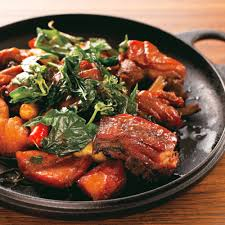

💖 一句最簡單而溫暖的問候「今天吃什麼?」是媽媽和家人彼此間最緊密的情感 💖
全家媽媽煮藝提供快速方便又安心美味的料理，給你最想念的媽媽味，給家人最安心的美味 🍛
全家旗下自有品牌FamilyMart Collection推出全新冷凍食品品牌「媽媽煮藝」，
以簡單儲存（小包裝）、簡單備料（免洗免切）、簡單烹調、簡單清理（一餐份量）為訴求，
首波推出36款商品。
同時，呼應現代人健康飲食需求，
全家更攜手永豐餘生技研發5款標榜在地食材、少添加的冷凍家常菜，
包括關山黑糖滷肉燥、五花滷桂筍、糖醋鱸魚片、三杯放山雞，價格從69～99元，
都是百元以內的簡單料理，加熱3分鐘即可上桌。
🍜三杯放三雞
選用日治時期開業的老牌黑麻油，風味醇厚香濃，
拌炒肉質緊實彈牙的足熟放山黑羽土雞，
再加入以「不落地安心豬血」與Q彈安心白米一同蒸煮製成的安心米血糕。
以中薑、蒜仁、九層塔，
天然辛香料帶出豐富層次及濃厚香氣營造出最正統的台灣滋味。

咖哩飯
唐寧茶
泡芙
心得